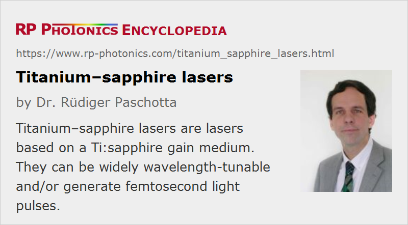

Titanium–sapphire Lasers
Definition: lasers based on a Ti:sapphire gain medium
More general term: solid-state lasers
German: Titan-Saphir-Laser
How to cite the article; suggest additional literature
Author: Dr. Rüdiger Paschotta
Titanium-doped sapphire (Ti3+:sapphire, sometimes TiSa laser) is a widely used transition-metal-doped gain medium for tunable lasers and femtosecond solid-state lasers. It was introduced in 1986 [1], and thereafter Ti:sapphire lasers quickly replaced most dye lasers, which had previously dominated the fields of ultrashort pulse generation and widely wavelength-tunable lasers. Ti:sapphire lasers are also very convenient e.g. for pumping test setups of new solid-state lasers (e.g. based on neodymium- or ytterbium-doped gain media), since they can easily be tuned to the required pump wavelength and allow one to work with very high pump brightness due to their good beam quality and high output power of typically several watts.
Because of the relatively high cost, which is largely caused by the pumping requirements (see below), Ti:sapphire lasers are not very widely used – and mostly for applications where their extraordinary capabilities either in terms of wavelength tuning or in terms of ultrashort pulse generation are exploited.
Properties of Ti:sapphire
Special properties of the Ti:sapphire gain medium (see also Table 1) are:
- Sapphire (monocrystalline Al2O3) has an excellent thermal conductivity, alleviating thermal effects even for high laser powers and intensities.
- The Ti3+ ion has a very large gain bandwidth (much larger than that of rare-earth-doped gain media), allowing the generation of very short pulses and also wide wavelength tunability (typically using a birefringent tuner). The maximum gain and laser efficiency are obtained around 800 nm, and many Ti:sapphire lasers operate with emission wavelengths between about 700 nm and 900 nm. The possible tuning range is ≈ 650 nm to 1100 nm, but different mirror sets are normally required for covering this huge range, and exchanging mirror sets is a tedious task. (The number of mirror sets required can be reduced by using ultrabroadband chirped mirrors.)
- There is also a wide range of possible pump wavelengths, which however are located in the green spectral region (with the absorption peak at ≈490 nm), where powerful laser diodes are not available. In most cases, several watts of pump power are used, sometimes even 20 W. Originally, Ti:sapphire lasers were in most cases pumped with 514-nm argon ion lasers, which are powerful, but very inefficient, expensive to operate, and bulky. Other kinds of green lasers are now available, and frequency-doubled solid-state lasers based on neodymium-doped gain media are widely used. The pump wavelength is then typically 532 nm, with a slightly reduced pump absorption efficiency compared with 514 nm. Direct diode pumping at shorter wavelengths, e.g. at 455 nm with GaN-based laser diodes, is also possible, but here one does not only have substantially reduced pump absorption but also a detrimental induced loss which substantially further degrades the performance [17].
- The Ti3+ doping concentration has to be kept fairly low (e.g. 0.15% or 0.25%) because otherwise no good crystal quality is possible. The therefore limited pump absorption usually enforces the use of a crystal length of several millimeters, which in combination with the small pump spot size (for high pump intensity) means that a rather high pump brightness is required.
- The upper-state lifetime of Ti:sapphire is short (3.2 μs), and the saturation power is very high. This means that the pump intensity needs to be high, so that a strongly focused pump beam and thus a pump source with high beam quality is required.
- Despite the huge emission bandwidth, Ti:sapphire has relatively high laser cross sections, which reduces the tendency of Ti:sapphire lasers for Q-switching instabilities.
Table 1: Properties of Ti3+:sapphire crystals.
| Property | Value |
|---|---|
| chemical formula | Ti3+:Al2O3 |
| crystal structure | hexagonal |
| mass density | 3.98 g/cm3 |
| Moh hardness | 9 |
| Young's modulus | 335 GPa |
| tensile strength | 400 MPa |
| melting point | 2040 °C |
| thermal conductivity | 33 W / (m K) |
| thermal expansion coefficient | ≈ 5 × 10−6 K−1 |
| thermal shock resistance parameter | 790 W/m |
| birefringence | negative uniaxial |
| refractive index at 633 nm | 1.76 |
| temperature dependence of refractive index | 13 × 10−6 K−1 |
| Ti density for 0.1% at. doping | 4.56 × 1019 cm−3 |
| fluorescence lifetime | 3.2 μs |
| emission cross section at 790 nm (polarization parallel to the c axis) | 41 × 10−20 cm2 |
Ti:sapphire may contain some amount of unwanted Ti4+ ions, leading to parasitic absorption and thus to a loss of laser efficiency. It is important to optimize the fabrication technique such that the Ti4+ content is minimized.
Construction of Ti:sapphire Lasers
In principle, Ti:sapphire lasers are built in similar ways as other types of solid-state lasers: with a Ti:sapphire crystal, typically between two curved mirrors for forming a tight focus in the crystal, with pump light injected through one or two of those dichroic mirrors, and some additional components such as mirrors and possibly optical elements for wavelength tuning and/or ultrashort pulse generation (see below). The laser crystal is usually quite small, typically with an optical path length of only a few millimeters for pump and laser radiation.
As explained above, diode pumping is usually still difficult to realize because of the high power and high beam quality required from the pump source at a somewhat inconvenient wavelength. Therefore, one often requires frequency-doubled solid-state lasers as pump sources.
Pulse Generation
Ultrashort pulses from Ti:sapphire lasers can be generated with passive mode locking, usually in the form of Kerr lens mode locking (KLM). The combination with a SESAM allows for reliable self-starting of the pulse generation process. A pulse duration around 100 fs is easily achieved and is typical for commercial devices. However, even pulse durations around 10 fs are possible for commercial devices, and the shortest pulses obtained in research laboratories have durations around 5.5 fs [8, 9]. For such high performance, it is essential to introduce very precise dispersion compensation e.g. with double-chirped mirrors.
Typical output powers of mode-locked Ti:sapphire lasers are of the order of 0.3–1 W, whereas continuous-wave versions sometimes generate several watts. A typical pulse repetition rate is 80 MHz, but devices with multi-gigahertz repetition rates are also commercially available, which can be used e.g. as frequency comb sources. For optical frequency metrology, Ti:sapphire lasers with ultrabroad (octave-spanning) optical spectra [11, 12] are very important.
If the requirements in terms of pulse duration and output power are less stringent, Ti:sapphire lasers may be replaced with Cr:LiSAF or Cr:LiCAF lasers, which can be pumped at longer (red) wavelengths, where laser diodes are available. In other cases, fiber lasers may be used.
Ti:sapphire is also often used for multi-pass amplifiers and regenerative amplifiers. Particularly with chirped-pulse amplification, such devices can reach enormous output peak powers of several terawatts, or in large facilities even petawatts. Such huge powers are interesting for nonlinear optics in an extreme regime, e.g. for high harmonic generation, but also for nuclear fusion research.
Frequency Conversion
Nonlinear frequency conversion can be used to extend further the range of emission wavelengths of a Ti:sapphire laser system. The simplest possibility is frequency doubling to access the blue, ultraviolet and green spectral region. Another approach is to pump an optical parametric oscillator, offering a wide tuning range in the near- or mid-infrared spectral region. For tuning the OPO, it is often sufficient to tune the Ti:sapphire wavelength, rather than e.g. tuning the OPO itself, e.g. by actively affecting the phase-matching conditions.
Suppliers
The RP Photonics Buyer's Guide contains 19 suppliers for titanium--sapphire lasers. Among them:
Questions and Comments from Users
Here you can submit questions and comments. As far as they get accepted by the author, they will appear above this paragraph together with the author’s answer. The author will decide on acceptance based on certain criteria. Essentially, the issue must be of sufficiently broad interest.
Please do not enter personal data here; we would otherwise delete it soon. (See also our privacy declaration.) If you wish to receive personal feedback or consultancy from the author, please contact him e.g. via e-mail.
By submitting the information, you give your consent to the potential publication of your inputs on our website according to our rules. (If you later retract your consent, we will delete those inputs.) As your inputs are first reviewed by the author, they may be published with some delay.
Bibliography
| [1] | P. F. Moulton, “Spectroscopic and laser characteristics of Ti:Al2O3”, J. Opt. Soc. Am. B 3 (1), 125 (1986), doi:10.1364/JOSAB.3.000125 |
| [2] | P. Albers et al., “Continuous-wave laser operation and quantum efficiency of titanium-doped sapphire”, J. Opt. Soc. Am. B 3 (1), 134 (1986), doi:10.1364/JOSAB.3.000134 |
| [3] | A. Sanchez et al., “Room-temperature continuous-wave operation of a Ti:Al2O3 laser”, Opt. Lett. 11 (6), 363 (1986), doi:10.1364/OL.11.000363 |
| [4] | E. Gulevich et al., “Current state and prospects for tunable titanium–sapphire lasers”, Proc. SPIE 2095, 102 (1994), doi:10.1117/12.183081 |
| [5] | J. F. Pinto et al., “Improved Ti:sapphire laser performance with new high figure of merit crystals”, IEEE J. Quantum Electron. 30 (11), 2612 (1994), doi:10.1109/3.333715 |
| [6] | A. Stingl et al., “Sub-10-fs mirror-dispersion-controlled Ti:sapphire laser”, Opt. Lett. 20 (6), 602 (1995), doi:10.1364/OL.20.000602 |
| [7] | G. N. Gibson et al., “Electro-optically cavity-dumped ultrashort-pulse Ti:sapphire oscillator”, Opt. Lett. 21 (14), 1055 (1996), doi:10.1364/OL.21.001055 |
| [8] | D. H. Sutter et al., “Semiconductor saturable-absorber mirror-assisted Kerr lens modelocked Ti:sapphire laser producing pulses in the two-cycle regime”, Opt. Lett. 24 (9), 631 (1999), doi:10.1364/OL.24.000631 |
| [9] | U. Morgner et al., “Sub-two cycle pulses from a Kerr-lens mode-locked Ti:sapphire laser”, Opt. Lett. 24 (6), 411 (1999), doi:10.1364/OL.24.000411 |
| [10] | S. H. Cho et al., “Low-repetition-rate high-peak-power Kerr-lens mode-locked TiAl2O3 laser with a multiple-pass cavity”, Opt. Lett. 24 (6), 417 (1999), doi:10.1364/OL.24.000417 |
| [11] | R. Ell et al., “Generation of 5-fs pulses and octave-spanning spectra directly from a Ti:sapphire laser”, Opt. Lett. 26 (6), 373 (2001), doi:10.1364/OL.26.000373 |
| [12] | L. Matos et al., “Direct frequency comb generation from an octave-spanning, prismless Ti:sapphire laser”, Opt. Lett. 29 (14), 1683 (2004), doi:10.1364/OL.29.001683 |
| [13] | T. M. Fortier et al., “Octave-spanning Ti:sapphire laser with a repetition rate > 1 GHz for optical frequency measurements and comparisons”, Opt. Lett. 31 (7), 1011 (2006), doi:10.1364/OL.31.001011 |
| [14] | I. Matsushima et al., “10 kHz 40 W Ti:sapphire regenerative ring amplifier”, Opt. Lett. 31 (13), 2066 (2006), doi:10.1364/OL.31.002066 |
| [15] | G. T. Nogueira et al., “Broadband 2.12 GHz Ti:sapphire laser compressed to 5.9 femtoseconds using MIIPS”, Opt. Express 16 (14), 10033 (2008), doi:10.1364/OE.16.010033 |
| [16] | A. Bartels et al., “Passively mode-locked 10 GHz femtosecond Ti:sapphire laser”, Opt. Lett. 33 (16), 1905 (2008), doi:10.1364/OL.33.001905 |
| [17] | P. W. Roth et al., “Directly diode-laser-pumped Ti:sapphire laser”, Opt. Lett. 34 (21), 3334 (2009), doi:10.1364/OL.34.003334 |
| [18] | P. W. Roth et al., “Direct diode-laser pumping of a mode-locked Ti:sapphire laser”, Opt. Lett. 36 (2), 304 (2011), doi:10.1364/OL.36.000304 |
| [19] | K. Gürel et al., “Green-diode-pumped femtosecond Ti:Sapphire laser with up to 450 mW average power”, Opt. Express 23 (23), 30043 (2015), doi:10.1364/OE.23.030043 |
See also: solid-state lasers, transition-metal-doped gain media, femtosecond lasers, vibronic lasers, dye lasers, tunable lasers, Kerr lens mode locking, ultrashort pulses, ultrafast lasers, regenerative amplifiers, chirped-pulse amplification, frequency combs
and other articles in the category lasers

This encyclopedia is authored by Dr. Rüdiger Paschotta, the founder and executive of RP Photonics Consulting GmbH. How about a tailored training course from this distinguished expert at your location? Contact RP Photonics to find out how his technical consulting services (e.g. product designs, problem solving, independent evaluations, training) and software could become very valuable for your business!
|  |
If you like this page, please share the link with your friends and colleagues, e.g. via social media:
These sharing buttons are implemented in a privacy-friendly way!